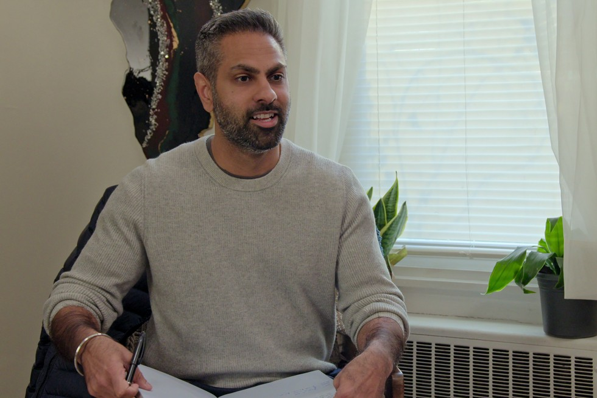

Ramit Sethi

“Spend extravagantly on the things you love, and cut costs mercilessly on the things you don't.”
Ramit Sethi is an American author, entrepreneur, and media personality best known for his New York Times-bestselling book I Will Teach You to Be Rich in addition to his company and YouTube channel of the same name. Born June 30, 1982 in California to immigrant parents from India, Sethi graduated from Stanford University with a Bachelor of Arts in Science, Technology & Society with a minor in Psychology in 2004, then completed a Master of Arts in sociology the following year from the same institution.
In 2009, Sethi published I Will Teach You to Be Rich under Workman Publishing Company. The book, targeted at young adults in their 20s and 30s, aims to help readers use practical, straightforward systems and thinking in order to build wealth and live what he calls a "rich life", a life where people are free to indulge in the things they love most (e.g. travel, fine dining, hobbies, etc.) while taking care of financial necessities (i.e. bills, savings & investing). After releasing the second edition of I Will Teach You to Be Rich in 2019 to incorporate updated information about finances in addition to providing even more success stories involving his philosophies and methodologies, Sethi starred in the 2023 Netflix series How to Get Rich where he worked with various couples and individuals to help them master their finances and feel more confident about money.
As of 2018, Sethi is currently married to Cassandra Sethi (neé Campa), a personal stylist for executives and businesspeople, and they both reside in Los Angeles, California. In addition to running his YouTube channel containing informational videos about personal finances, Sethi also hosts the podcast Money for Couples aimed at helping people in romantic relationships tackle financial stress while providing his audiences with intimate real-life stories of love and money. In 2024, he released a book of the same name with a similar goal and premise.
To learn more information about Ramit Sethi and his financial teachings, please visit his official website at www.iwillteachyoutoberich.com.